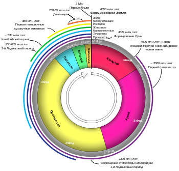
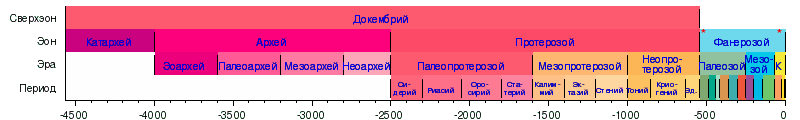

История Земли описывает наиболее важные события и основные этапы развития планеты Земля с момента её образования и до наших дней. Почти все отрасли естествознания внесли свой вклад в понимание основных событий прошлого Земли. Возраст Земли составляет примерно треть возраста Вселенной. В этот промежуток времени произошло огромное количество биологических и геологических изменений
Земля образовалась около 4,567 млрд лет назад путём аккреции из протопланетного диска, дискообразной массы газа, пыли, оставшихся от образования Солнца, которая и дала начало Солнечной системе. Вулканическая дегазация создала первичную атмосферу, но в ней почти не было кислорода и она была бы токсичной для людей и современной жизни в целом. Бо́льшая часть Земли была расплавленной из-за активного вулканизма и частых столкновений с другими космическими объектами. Предполагается, что одно из таких крупных столкновений привело к наклону земной оси и формированию Луны. Со временем такие космические бомбардировки прекратились, что позволило планете остыть и образовать твёрдую кору. Доставленная на планету кометами и астероидами вода сконденсировалась в облака и океаны. Земля стала, наконец, гостеприимной для жизни, а самые ранние её формы обогатили атмосферу кислородом. По крайней мере, первый миллиард лет жизни на Земле существовала в малых и микроскопических формах. Около 580 миллионов лет назад возникла сложная многоклеточная жизнь, а во время кембрийского периода она пережила процесс быстрой диверсификации в большинство основных типов. Около шести миллионов лет назад от гоминидов отделилась линия гоминини, что привело к появлению шимпанзе (наших ближайших родственников), и в дальнейшем к современному человеку.
С момента её формирования на нашей планете постоянно происходят биологические и геологические изменения. Организмы непрерывно развиваются, принимают новые формы или вымирают в ответ на постоянно меняющуюся планету. Процесс тектоники плит играет важную роль в формировании океанов и континентов Земли, а также жизни, которой они дают убежище. Биосфера, в свою очередь, оказала значительное влияние на атмосферу и другие абиотические условия на планете, такие, как образование озонового слоя, распространение кислорода, а также создание почвы. Хотя люди не способны воспринимать это в связи с их относительно коротким периодом жизни, эти изменения продолжаются и будут продолжаться в течение следующих нескольких миллиардов лет.